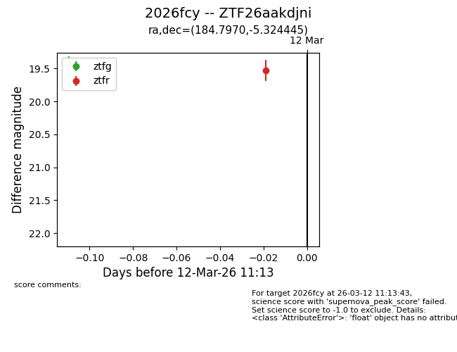
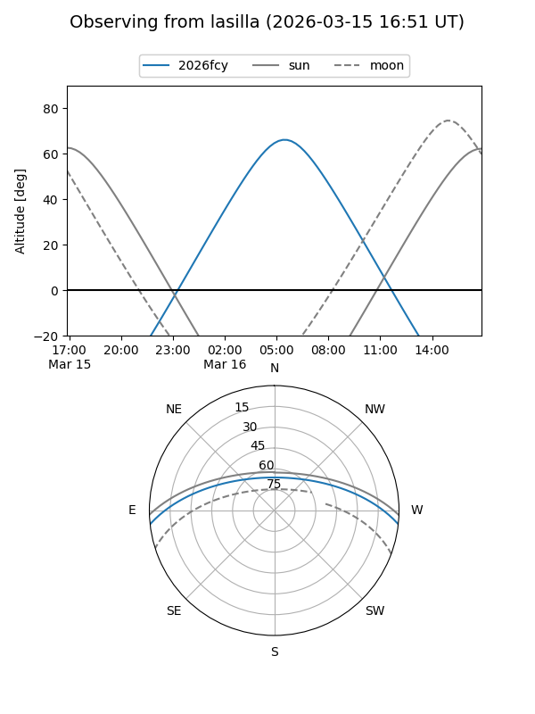
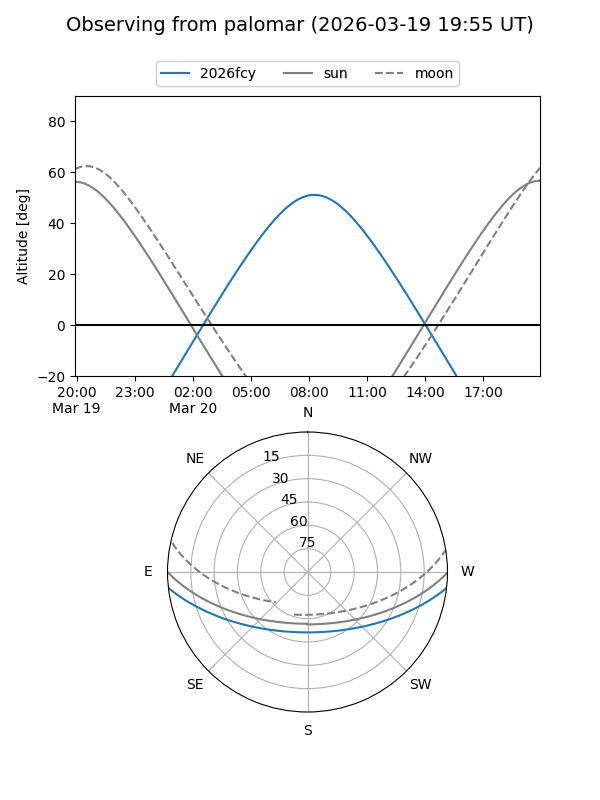
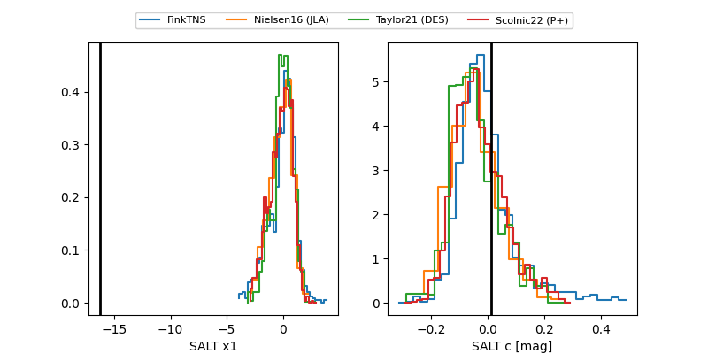

2026fcy
Target 2026fcy at 2026-03-12 11:15
Aliases and brokers:
FINK: link
Lasair: link
ALeRCE: link
TNS: link
YSE: link
alt names
ZTF26aakdjni (ztf,fink_ztf)
2026fcy (tns,yse)
Coordinates:
equatorial (ra, dec) = 184.7970,-5.32444
equatorial (HMS+DMS) = 12:19:11.29,-05:19:28.00
galactic (l, b) = (288.2270,+56.62374)
Flags:
Photometry:
last ztfg=19.46, ztfr=19.53
1 ztfg, 1 ztfr detections
Lightcurve

Visibility


Additional plots
